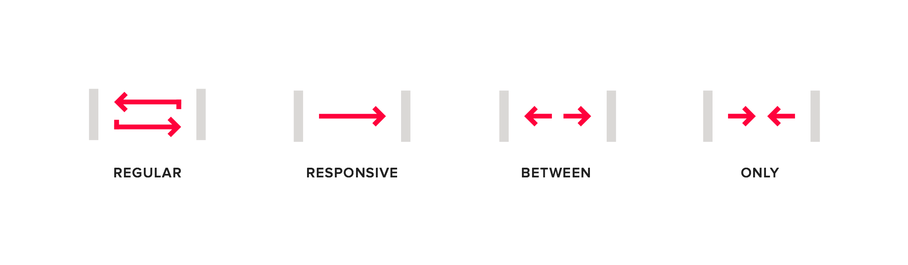
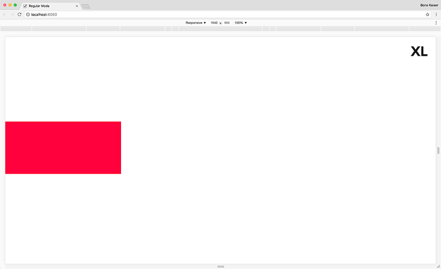
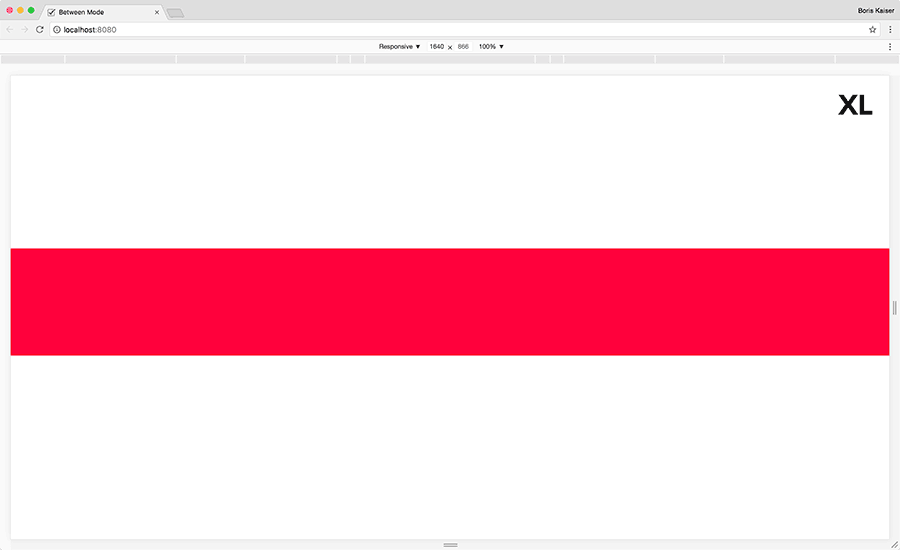

Feature Modes
All features except the wrapper feature offer four different modes which can be activated when creating a grid.

Note: all features except the hide feature can be used exclusively in responsive mode. The regular, between and
only modes were created to make the markup more readable.
1. Regular
The feature settings always apply.
Example markup

The div element will always be ten columns wide.
<div data-srgrid-col="10"></div>
2. Responsive
The feature settings are following an upward inheritance from each specific breakpoint (mobile first approach).
Example markup
The div element will be ten columns wide from breakpoint "m" upwards. Within the default setting this width applies
to the breakpoints "m", "l" and "xl".
<div data-srgrid-col="m-10">...</div>
3. Between
The feature settings apply between two specific breakpoints.
Example markup

The div element will be ten columns wide between the breakpoints "xs" and "m". Within default setting this width
applies to the breakpoints "xs", "s" and "m".
<div data-srgrid-col="xs-m-10">...</div>
4. Only
The feature settings only apply to a specific breakpoint.
Example markup

The div element will be ten columns wide in breakpoint "m" only.
<div data-srgrid-col="m-only-10">...</div>